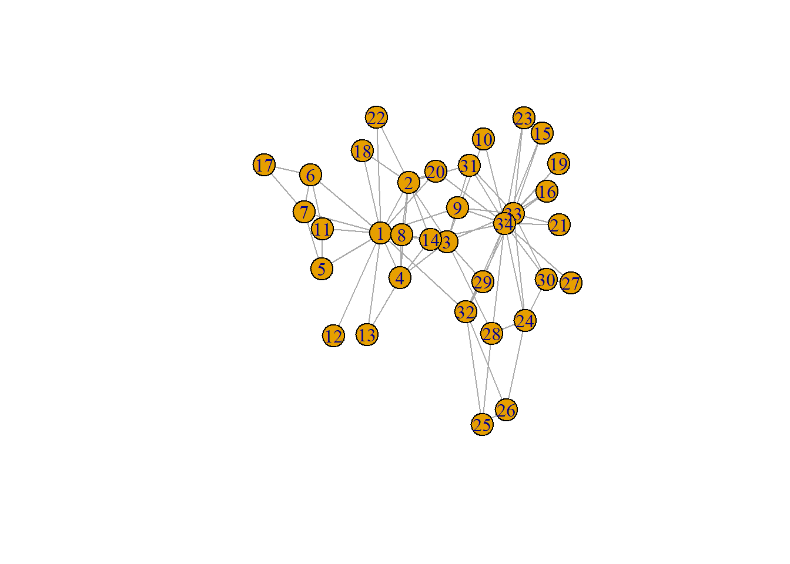
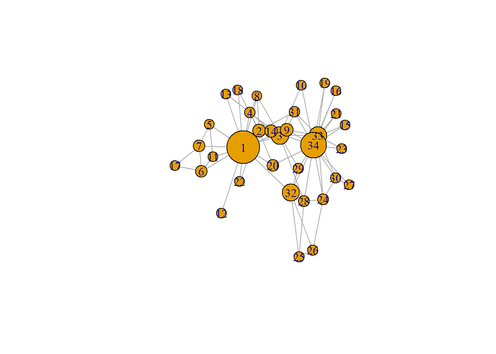
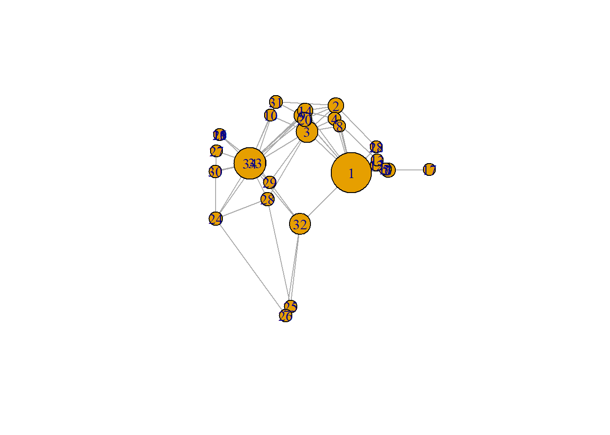
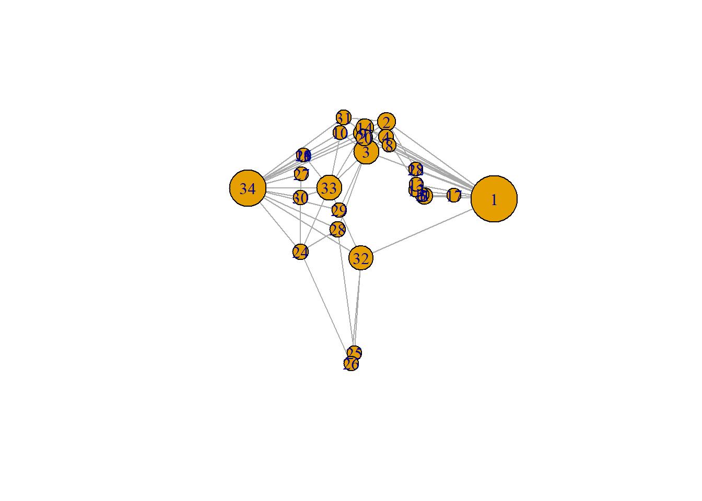

This week I have worked on graphs and webscraping. My R was messing with me, so the graphs can now be found in week 5, because for some reason in week 4, the file won’t knit and in week 5, it will.
#loading packages
fpackage.check <- function(packages) {
lapply(packages, FUN = function(x) {
if (!require(x, character.only = TRUE)) {
install.packages(x, dependencies = TRUE)
library(x, character.only = TRUE)
}
})
}
fsave <- function(x, file = NULL, location = "./data/processed/") {
ifelse(!dir.exists("data"), dir.create("data"), FALSE)
ifelse(!dir.exists("data/processed"), dir.create("data/processed"), FALSE)
if (is.null(file))
file = deparse(substitute(x))
datename <- substr(gsub("[:-]", "", Sys.time()), 1, 8)
totalname <- paste(location, datename, file, ".rda", sep = "")
save(x, file = totalname) #need to fix if file is reloaded as input name, not as x.
}
fload <- function(filename) {
load(filename)
get(ls()[ls() != "filename"])
}
fshowdf <- function(x, ...) {
knitr::kable(x, digits = 2, "html", ...) %>%
kableExtra::kable_styling(bootstrap_options = c("striped", "hover")) %>%
kableExtra::scroll_box(width = "100%", height = "300px")
}
colorize <- function(x, color) {
sprintf("<span style='color: %s;'>%s</span>", color, x)
}
packages = c("RSiena", "devtools", "igraph")
fpackage.check(packages)## [[1]]
## NULL
##
## [[2]]
## NULL
##
## [[3]]
## NULL#devtools::install_github('JochemTolsma/RsienaTwoStep', build_vignettes=TRUE)
packages = c("RsienaTwoStep")
fpackage.check(packages)## [[1]]
## NULLrequire(igraph)
g <- make_graph("Zachary")
plot(g)
#not the same pictures, but centres are the same
#centre of the graph is decided by amount of ties Description: Network exists of 34 people. Relations are non-directed (or is this the default of igraph?)
gmat <- as_adjacency_matrix(g, type = "both", sparse = FALSE)
gmat## [,1] [,2] [,3] [,4] [,5] [,6] [,7] [,8] [,9] [,10] [,11] [,12] [,13] [,14] [,15] [,16] [,17]
## [1,] 0 1 1 1 1 1 1 1 1 0 1 1 1 1 0 0 0
## [2,] 1 0 1 1 0 0 0 1 0 0 0 0 0 1 0 0 0
## [3,] 1 1 0 1 0 0 0 1 1 1 0 0 0 1 0 0 0
## [4,] 1 1 1 0 0 0 0 1 0 0 0 0 1 1 0 0 0
## [5,] 1 0 0 0 0 0 1 0 0 0 1 0 0 0 0 0 0
## [6,] 1 0 0 0 0 0 1 0 0 0 1 0 0 0 0 0 1
## [7,] 1 0 0 0 1 1 0 0 0 0 0 0 0 0 0 0 1
## [8,] 1 1 1 1 0 0 0 0 0 0 0 0 0 0 0 0 0
## [9,] 1 0 1 0 0 0 0 0 0 0 0 0 0 0 0 0 0
## [10,] 0 0 1 0 0 0 0 0 0 0 0 0 0 0 0 0 0
## [11,] 1 0 0 0 1 1 0 0 0 0 0 0 0 0 0 0 0
## [12,] 1 0 0 0 0 0 0 0 0 0 0 0 0 0 0 0 0
## [13,] 1 0 0 1 0 0 0 0 0 0 0 0 0 0 0 0 0
## [14,] 1 1 1 1 0 0 0 0 0 0 0 0 0 0 0 0 0
## [15,] 0 0 0 0 0 0 0 0 0 0 0 0 0 0 0 0 0
## [16,] 0 0 0 0 0 0 0 0 0 0 0 0 0 0 0 0 0
## [17,] 0 0 0 0 0 1 1 0 0 0 0 0 0 0 0 0 0
## [18,] 1 1 0 0 0 0 0 0 0 0 0 0 0 0 0 0 0
## [19,] 0 0 0 0 0 0 0 0 0 0 0 0 0 0 0 0 0
## [20,] 1 1 0 0 0 0 0 0 0 0 0 0 0 0 0 0 0
## [21,] 0 0 0 0 0 0 0 0 0 0 0 0 0 0 0 0 0
## [22,] 1 1 0 0 0 0 0 0 0 0 0 0 0 0 0 0 0
## [23,] 0 0 0 0 0 0 0 0 0 0 0 0 0 0 0 0 0
## [24,] 0 0 0 0 0 0 0 0 0 0 0 0 0 0 0 0 0
## [25,] 0 0 0 0 0 0 0 0 0 0 0 0 0 0 0 0 0
## [26,] 0 0 0 0 0 0 0 0 0 0 0 0 0 0 0 0 0
## [27,] 0 0 0 0 0 0 0 0 0 0 0 0 0 0 0 0 0
## [28,] 0 0 1 0 0 0 0 0 0 0 0 0 0 0 0 0 0
## [29,] 0 0 1 0 0 0 0 0 0 0 0 0 0 0 0 0 0
## [30,] 0 0 0 0 0 0 0 0 0 0 0 0 0 0 0 0 0
## [31,] 0 1 0 0 0 0 0 0 1 0 0 0 0 0 0 0 0
## [32,] 1 0 0 0 0 0 0 0 0 0 0 0 0 0 0 0 0
## [33,] 0 0 1 0 0 0 0 0 1 0 0 0 0 0 1 1 0
## [34,] 0 0 0 0 0 0 0 0 1 1 0 0 0 1 1 1 0
## [,18] [,19] [,20] [,21] [,22] [,23] [,24] [,25] [,26] [,27] [,28] [,29] [,30] [,31] [,32]
## [1,] 1 0 1 0 1 0 0 0 0 0 0 0 0 0 1
## [2,] 1 0 1 0 1 0 0 0 0 0 0 0 0 1 0
## [3,] 0 0 0 0 0 0 0 0 0 0 1 1 0 0 0
## [4,] 0 0 0 0 0 0 0 0 0 0 0 0 0 0 0
## [5,] 0 0 0 0 0 0 0 0 0 0 0 0 0 0 0
## [6,] 0 0 0 0 0 0 0 0 0 0 0 0 0 0 0
## [7,] 0 0 0 0 0 0 0 0 0 0 0 0 0 0 0
## [8,] 0 0 0 0 0 0 0 0 0 0 0 0 0 0 0
## [9,] 0 0 0 0 0 0 0 0 0 0 0 0 0 1 0
## [10,] 0 0 0 0 0 0 0 0 0 0 0 0 0 0 0
## [11,] 0 0 0 0 0 0 0 0 0 0 0 0 0 0 0
## [12,] 0 0 0 0 0 0 0 0 0 0 0 0 0 0 0
## [13,] 0 0 0 0 0 0 0 0 0 0 0 0 0 0 0
## [14,] 0 0 0 0 0 0 0 0 0 0 0 0 0 0 0
## [15,] 0 0 0 0 0 0 0 0 0 0 0 0 0 0 0
## [16,] 0 0 0 0 0 0 0 0 0 0 0 0 0 0 0
## [17,] 0 0 0 0 0 0 0 0 0 0 0 0 0 0 0
## [18,] 0 0 0 0 0 0 0 0 0 0 0 0 0 0 0
## [19,] 0 0 0 0 0 0 0 0 0 0 0 0 0 0 0
## [20,] 0 0 0 0 0 0 0 0 0 0 0 0 0 0 0
## [21,] 0 0 0 0 0 0 0 0 0 0 0 0 0 0 0
## [22,] 0 0 0 0 0 0 0 0 0 0 0 0 0 0 0
## [23,] 0 0 0 0 0 0 0 0 0 0 0 0 0 0 0
## [24,] 0 0 0 0 0 0 0 0 1 0 1 0 1 0 0
## [25,] 0 0 0 0 0 0 0 0 1 0 1 0 0 0 1
## [26,] 0 0 0 0 0 0 1 1 0 0 0 0 0 0 1
## [27,] 0 0 0 0 0 0 0 0 0 0 0 0 1 0 0
## [28,] 0 0 0 0 0 0 1 1 0 0 0 0 0 0 0
## [29,] 0 0 0 0 0 0 0 0 0 0 0 0 0 0 1
## [30,] 0 0 0 0 0 0 1 0 0 1 0 0 0 0 0
## [31,] 0 0 0 0 0 0 0 0 0 0 0 0 0 0 0
## [32,] 0 0 0 0 0 0 0 1 1 0 0 1 0 0 0
## [33,] 0 1 0 1 0 1 1 0 0 0 0 0 1 1 1
## [34,] 0 1 1 1 0 1 1 0 0 1 1 1 1 1 1
## [,33] [,34]
## [1,] 0 0
## [2,] 0 0
## [3,] 1 0
## [4,] 0 0
## [5,] 0 0
## [6,] 0 0
## [7,] 0 0
## [8,] 0 0
## [9,] 1 1
## [10,] 0 1
## [11,] 0 0
## [12,] 0 0
## [13,] 0 0
## [14,] 0 1
## [15,] 1 1
## [16,] 1 1
## [17,] 0 0
## [18,] 0 0
## [19,] 1 1
## [20,] 0 1
## [21,] 1 1
## [22,] 0 0
## [23,] 1 1
## [24,] 1 1
## [25,] 0 0
## [26,] 0 0
## [27,] 0 1
## [28,] 0 1
## [29,] 0 1
## [30,] 1 1
## [31,] 1 1
## [32,] 1 1
## [33,] 0 1
## [34,] 1 0isSymmetric(gmat) ## [1] TRUE#symmetric is true so the network is undirected#size
# number of nodes
vcount(g)## [1] 34# number of edges
ecount(g)## [1] 78#degree
igraph::degree(g)## [1] 16 9 10 6 3 4 4 4 5 2 3 1 2 5 2 2 2 2 2 3 2 2 2 5 3 3 2 4 3 4 4 6
## [33] 12 17# hist(table(degree(g)), xlab='indegree', main= 'Histogram of indegree')
#transitivity
# be aware that directed graphs are considered as undirected. but g is undirected.
igraph::transitivity(g, type = c("localundirected"), isolates = c("NaN", "zero")) ## [1] 0.1500000 0.3333333 0.2444444 0.6666667 0.6666667 0.5000000 0.5000000 1.0000000 0.5000000
## [10] 0.0000000 0.6666667 NaN 1.0000000 0.6000000 1.0000000 1.0000000 1.0000000 1.0000000
## [19] 1.0000000 0.3333333 1.0000000 1.0000000 1.0000000 0.4000000 0.3333333 0.3333333 1.0000000
## [28] 0.1666667 0.3333333 0.6666667 0.5000000 0.2000000 0.1969697 0.1102941#betweenness
igraph::betweenness(g, directed = FALSE)## [1] 231.0714286 28.4785714 75.8507937 6.2880952 0.3333333 15.8333333 15.8333333 0.0000000
## [9] 29.5293651 0.4476190 0.3333333 0.0000000 0.0000000 24.2158730 0.0000000 0.0000000
## [17] 0.0000000 0.0000000 0.0000000 17.1468254 0.0000000 0.0000000 0.0000000 9.3000000
## [25] 1.1666667 2.0277778 0.0000000 11.7920635 0.9476190 1.5428571 7.6095238 73.0095238
## [33] 76.6904762 160.5515873#1 and 34 should be stressed a bit more as they have higher betweenness. You could give them a colour with you palette or make them biggerigraph::dyad_census(g)## Warning: `dyad_census()` requires a directed graph.## $mut
## [1] 78
##
## $asym
## [1] 0
##
## $null
## [1] 483igraph::triad.census(g)## Warning: `triad.census()` was deprecated in igraph 2.0.0.
## ℹ Please use `triad_census()` instead.
## This warning is displayed once per session.
## Call `lifecycle::last_lifecycle_warnings()` to see where this warning
## was generated.## Warning in triad_census_impl(graph = graph): Triad census called on an undirected graph. All connections will be treated as mutual.
## Source: misc/motifs.c:1157## [1] 3971 0 1575 0 0 0 0 0 0 0 393 0 0 0 0 45# I will use sna because it shows the names of the triads as well.
sna::triad.census(gmat)## 003 012 102 021D 021U 021C 111D 111U 030T 030C 201 120D 120U 120C 210 300
## [1,] 3971 0 1575 0 0 0 0 0 0 0 393 0 0 0 0 45unloadNamespace("sna") #I will detach this package again, otherwise it will interfere with all kind of functions from igraph, and my students will hate me for that.
transitivity(
g,
type = c("globalundirected"),
vids = NULL,
weights = NULL,
isolates = c("NaN", "zero")
)## [1] 0.2556818visualisatie - we maken de grootte van de netwerken afhankelijk van iets anders:
# changing V(ertices)
# if you want to change the edges ((pijltjes)) use E
V(g)$size = betweenness(g, normalized = T, directed = FALSE) * 60 + 12 #after some trial and error
plot(g, mode = "undirected")
#set the nodes a bit further apart
set.seed(2345)
l <- layout_with_mds(g) #https://igraph.org/r/doc/layout_with_mds.html
plot(g, layout = l)
l #let us take a look at the coordinates## [,1] [,2]
## [1,] 1.070931935 -0.172458113
## [2,] 0.732844464 0.754023309
## [3,] 0.100582299 0.397693607
## [4,] 0.708246655 0.570205545
## [5,] 1.816293170 -0.120778206
## [6,] 1.881329566 -0.135518854
## [7,] 1.881329566 -0.135518854
## [8,] 0.812606714 0.472619437
## [9,] -0.003769996 0.615513628
## [10,] -0.685680315 0.621065149
## [11,] 1.816293170 -0.120778206
## [12,] 1.621247830 -0.065820692
## [13,] 1.637845123 0.001789972
## [14,] 0.067317230 0.681421148
## [15,] -1.796316404 0.351417630
## [16,] -1.796316404 0.351417630
## [17,] 2.775260452 -0.124317652
## [18,] 1.616210024 0.182510197
## [19,] -1.796316404 0.351417630
## [20,] 0.048362858 0.566654982
## [21,] -1.796316404 0.351417630
## [22,] 1.616210024 0.182510197
## [23,] -1.796316404 0.351417630
## [24,] -1.891240567 -0.799574907
## [25,] -0.258345165 -2.006346563
## [26,] -0.360530857 -2.131642875
## [27,] -1.865177401 0.128596564
## [28,] -0.760226022 -0.529392331
## [29,] -0.710979936 -0.299960128
## [30,] -1.898426916 -0.149398746
## [31,] -0.568691923 0.804189411
## [32,] -0.048136037 -0.870967614
## [33,] -1.023681000 -0.035802363
## [34,] -1.146442924 -0.037605192l[1, 1] <- 4
l[34, 1] <- -3.5
plot(g, layout = l)
#this graph might make you interpret it like there is polarisation, fight, that 1 and 34 the network apartQuestions: is this data manipulation or not? Is it illustrating the story more clearly or not? Is it ethical? !!!! It is important to be open about this !!! In this case you would mention in the article that you placed 1 and 34 on the outsides of your picture
testm <- matrix(NA, nrow = 4, ncol = 4)
testm[1,1] <- 0
testm[1,2] <- 1
testm[1,4] <- 1
testm[3,1] <- 0
testm[3,2] <- 1
testm[3,4] <- 1
testm[4,1] <- 1
testm[4,2] <- 0
testm[4,4] <- 1
#checking if one misses in rows
missrow <- rowSums(is.na(testm)) == nrow(testm)
#checking if one misses in cols
misscol <- colSums(is.na(testm)) == ncol(testm)
#checking if missing in both
misstotal <- which(missrow & misscol)
testm[which(missrow) , ] <- 0
testm## [,1] [,2] [,3] [,4]
## [1,] 0 1 NA 1
## [2,] 0 0 0 0
## [3,] 0 1 NA 1
## [4,] 1 0 NA 1# start with clean workspace
rm(list = ls())
# install.packages('data.table')
library(data.table) # mainly for faster data handling## Warning: package 'data.table' was built under R version 4.5.2##
## Attaching package: 'data.table'## The following objects are masked from 'package:lubridate':
##
## hour, isoweek, isoyear, mday, minute, month, quarter, second, wday, week, yday, year## The following objects are masked from 'package:dplyr':
##
## between, first, last## The following object is masked from 'package:purrr':
##
## transposelibrary(tidyverse) # I assume you already installed this one!
# install.packages('httr') # we don't need this for now require(httr)
#install.packages("xml2")
require(xml2)## Loading required package: xml2## Warning: package 'xml2' was built under R version 4.5.3#install.packages("rvest")
require(rvest)## Loading required package: rvest## Warning: package 'rvest' was built under R version 4.5.3##
## Attaching package: 'rvest'## The following object is masked from 'package:readr':
##
## guess_encoding#install.packages("devtools")
require(devtools)
# Note we're doing something different here. We're installing a *latest* version directly from
# GitHub This is because the released version of this packages contains some errors!
devtools::install_github("jkeirstead/scholar")## Warning: `install_github()` was deprecated in devtools 2.5.0.
## ℹ Please use pak::pak("user/repo") instead.
## This warning is displayed once per session.
## Call `lifecycle::last_lifecycle_warnings()` to see where this warning
## was generated.## Using GitHub PAT from the git credential store.## Skipping install of 'scholar' from a github remote, the SHA1 (2e0a4ca0) has not changed since last install.
## Use `force = TRUE` to force installationrequire(scholar)## Loading required package: scholar# define workdirectory, note the double *backslashes* if you're on windows setwd('/yourpathhere)'
url<- "https://nos.nl/zoeken?q=nprz&page=1"
nos_nprz <- read_html(url)
nos_nprz## {html_document}
## <html data-theme="light" lang="nl">
## [1] <head>\n<meta http-equiv="Content-Type" content="text/html; charset=UTF-8">\n<meta charset="u ...
## [2] <body>\n<div id="__next">\n<nav data-tracking="nestType1=header" aria-label="Hoofdnavigatie" ...#lijst <- nos_nprz %>% html_elements("main") %>% html_elements("ul") %>% html_elements("li")#titel <- nos |>
#lijst[1] %>% html_children %>% html_attr(name="href")
#lijst[1] %>% html_element("time") %>% html_text
#url <- paste0("https://nos.nl", artikel1)
#tekst1 <- read_html(url)
#html_text2(tekst1)
#via element you go deeper into a page. you can also look into this via children ::: ::::